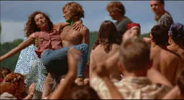

|
A Walk on the
Moon/B+,B+ |
|
Disney/1999/107/WS
1.85 |
Sensitive
movies can turn saccharine or boring or maudlin or worse. A
Walk on the Moon is a sensitive movie that tiptoes through
the pitfalls without tripping over its own themes. It is
consistently fair to all its characters, and there are no real
bad guys. Considering all the raw emotions exposed, it is
remarkable you can understand the motivations of the diverse
characters.
 |
|
Woodstock, the
Catskills and Passion. ©Universal |
Set with great affection at a Catskill bungalow colony
during the time of the first manned landing on the moon in 1969
and during the Woodstock Music festival, the film contains
wonderful small touches. A traditional summer refuge from the
sweltering city heat for many middle class Jewish families, the
low-key facilities are depicted with the accompaniment of the
ubiquitous PA speakers that seemed to be the joy of every
bungalow colony owner. Perhaps the announcements at Fogler’s
are a little more colorful as delivered by the very funny Julie
Kavner, but the ring of truth overrides the exaggeration.
What happens when the passion of
Pearl, a summer refugee from the Brooklyn heat, is awakened by
the attractive new “Blouse Man?” The timing is unfortunate
as is conflicts with the eruption of her daughter’s nascent
womanhood Pearl’s
hard working husband Marty is left out in the cold, frustrated
and unable to understand the changes going on around him.
Coincidence plays a part in the unfolding drama of A Walk on
the Moon, but while I always look suspiciously when the
element of chance plays too great a part in the unfolding film,
the filmmakers have taken enough care in the script to make it
acceptable.
A Walk on the Moon is a good movie, even a very good movie, but you are left
with a lingering feeling that there could have been more. Did
the director leave something on the table? Were there precious
scraps of Catskills minutiae left on the cutting room floor?
Maybe I am wrong and this would have been a lesser film with
additional complexity or further explorations of relationships.
It is primarily, after all, Pearl’s story.
Diane Lane is always
appealing. She’s a very sexy woman armed with everything that
makes a screen sex siren, yet she plays plain with great
honesty. She makes Pearl a sympathetic character despite what
may be viewed as irredeemable transgressions. Viggo Mortensen
provides his own brand of sexual screen presence and is
excellent as Walker the blouse man. Anna Paquin is appealing as
daughter Alison and Liev Schreiber well cast as Marty.
Tony Goldwyn’s directing debut is
outstanding. Goldwyn demonstrates a visual and character
command. He’s an even-handed commander of A Walk on the
Moon. The cinematography of Adam Richmond captures the right
tones for the time and place.
The subtlety of color in the transfer
is very appealing. One look at the ”blouse man’s” array of
garments provides raves to the DVD’s ability to handle color.
Images are detailed with excellent depth. There’s plenty of
light output with dynamic contrast. The soundtrack pops with
music of the period and the ambient sounds of summer are well
recorded in Dolby Digital 5:1 sound.
|
|
The
Feature
Archive has articles ranging from John
Ford to Blonde
Bimbos, The
Heistmasters, Akira
Kurosawa and Frank
Darabont.

Click on the image above to learn more about the
effect of an actor's voice on his screen
persona.
Check out the Movie
Poster Archive for short bios and
images of Susan Hayward, Kirk Douglas, Katharine
Hepburn and many more. This month's featured star
is Clark
Gable. |
|
Imaging
Science Foundation
The Imaging Science Foundation
promotes proper standards in home theater viewing.
ISF trained technicians offer monitor calibration
services to consumers. The difference in a
properly calibrated monitor can be astounding. Click
on the image to find an ISF member near you. |
|
HOT
LINKS
DVD
Verdict
They
may be judgmental, but that's the point, isn't it.
Lots of DVD reviews plus news and more
The
Home Theater Forum
Looking
for lively and helpful exchanges on home theater,
DVD, movies. Visit this friendly site and get a
hardy welcome. |
|
Home Theater Reference
Reviewing System
When you read a DVD review it's of utmost importance to
know what equipment is being used to evaluate quality.
Click on the projectors to find out more. |
|